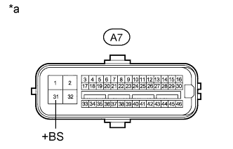

DTC C0278 Open in ABS Solenoid Relay Circuit |
DTC C0279 Short in ABS Solenoid Relay Circuit |
| DTC Code | DTC Detection Condition | Trouble Area |
| C0278 | Either condition is met:
|
|
| C0279 | The following condition continues for at least 0.2 seconds.
|
| 1.CHECK TERMINAL VOLTAGE (+BS) |
Disconnect the A7 skid control ECU connector.
|  |
Measure the voltage according to the value(s) in the table below.
| Tester Connection | Condition | Specified Condition |
| A7-31 (+BS) - Body ground | Always | 11 to 14 V |
| *a | Front view of wire harness connector (to Skid Control ECU) |
|
| ||||
| OK | |
| 2.CHECK HARNESS AND CONNECTOR (GND1, GND2, AND GND3 TERMINAL) |
Disconnect the A7 and A8 skid control ECU connectors.
Measure the resistance according to the value(s) in the table below.
| Tester Connection | Condition | Specified Condition |
| A7-1 (GND1) - Body ground | Always | Below 1 Ω |
| A7-32 (GND2) - Body ground | Always | Below 1 Ω |
| A8-4 (GND3) - Body ground | Always | Below 1 Ω |
|
| ||||
| OK | |
| 3.RECONFIRM DTC |
Clear the DTCs (Click here).
Drive the vehicle at a speed of approximately 32 km/h (20 mph) or more for 60 seconds or more.
Check if the same DTCs are output (Click here).
| Result | Proceed to |
| DTC is not output | A |
| DTC is output | B |
|
| ||||
| A | ||
| ||